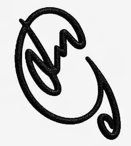

jmcl_edigital
Mi posicionamiento SEO Creativo Desarrollador.
Mi estrategia de palabras clave: el SEO lo sabrá.
Mi Gestión de Contenidos Digitales:
Planificando y Organizando Información.
Usabilidad y Accesibilidad Web:
La Máquina Me Reconoce.
Mi estrategia de palabras clave: el SEO lo sabrá.
Mi Gestión de Contenidos Digitales:
Planificando y Organizando Información.
Usabilidad y Accesibilidad Web:
La Máquina Me Reconoce.
Buscar en GOOGLE
Un ©iudadano digital.
¡He vuelto!
Mi escueto sitio web personal. No es gran cosa, lo sé, pero después de 10 años desconectado, es lo mínimo para volver a tener presencia en Internet por mis propios medios. Por algo se recomienza. Espero que pueda mejorar con el tiempo, a partir de ahora, con la revolución de la IA. ¿Se me habrá acabado lo de escribir código nativo a mano? Bueno un poco de cal y un poco de arena.
Puede decirse que acabo de comenzar y mi website ya comienza a estar posicionado. Todo un esfuerzo mental por mi parte, aplicando ciertos conocimientos, en una jugada relámpago. Empiezo con temas RETRO de hace mucho tiempo. Sin duda, se puede mejorar.
Evolucionando en la nueva era digital.
Un saludo al visitante
jmcl_edigital